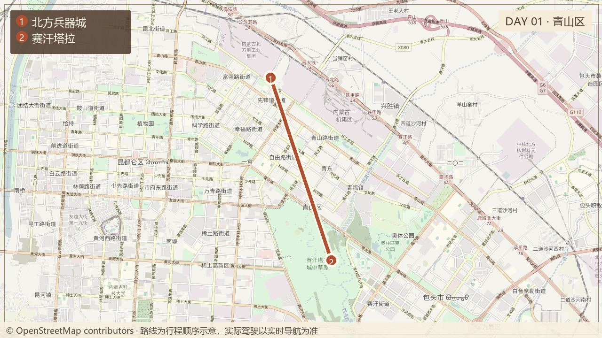

DAY 01
北方兵器城 → 赛汗塔拉

10:30
从呼和浩特出发
经G6前往包头，正常约2–2.5小时。由非驾驶者途中预订青山区或赛汗塔拉附近、停车方便的酒店。
13:00
青山区午餐
控制在45–60分钟，避免空腹进入兵器城。
14:00
北方兵器城
预计2–2.5小时，重点看火炮、装甲车辆与军工历史。当前参考18:30停止入园、19:00闭园。
16:40
赛汗塔拉城中草原
天气允许时游览至19:00，以短距离散步、城市与草原同框观景为主，不走完整环线。
雨天：小雨缩短至30–60分钟；持续降雨则直接晚餐、入住。昆都仑河湿地只有在天黑前、天气转好时才可替代，绝不作为夜间赶场。